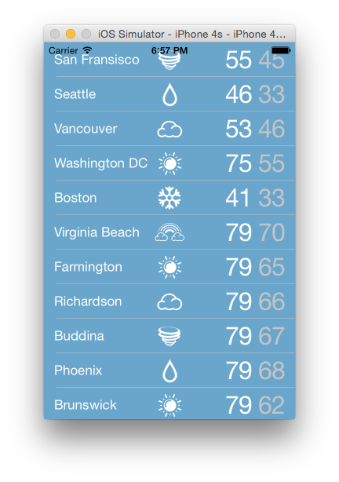

Duration
15 minutes
Goals
The primary goal of this lab will be to create a custom dynamic cell for a table view using the Xamarin iOS designer.
Required assets
The provided Part 04 Resources folder contains a starter solution as well as a completed solution you can use to check your work. Please make sure you have this folder before you begin.
Challenge
You'll start with an existing application that has a UITableViewController created using the Xamarin designer.
Currently it's using the default cell style to display a single line of text.
You're going to create a dynamic protoype cell in the designer and use it to display the weather data within the table view.
- Inspect and run the starter solution in the Part 04 Resources folder, you will see that it's not very visually appealing.
- Open the storyboard and create a dynamic prototype cell in the table view using the designer.
- Add a backing class for the cell.
- Add child views to the prototype cell using the designer.
- Update the table view code-behind to use the prototype cell.
Steps
Below are the step-by-step instructions to implement the exercise.
Inspect the starter solution
Open the starter solution in the Part 04 Resources folder and run the application. It works but it's not very visually appealing.
Create a dynamic prototype cell using the designer
Add a dynamic protoype cell to the existing table view and add child views to visualize the weather data.
- Open Main.storyboard and change the view to an iPhone 6.
- Select the Table View on the Table View Controller and change the number of Prototype Cells to 1.
- Select the new Prototype Cell on the table view.
- Set the Identifier (for cell re-use) to "cell_id".
Add a backing class for the cell
We'll need a backing class for the prototype cell so we can connect our data to the UI later.
- Make sure the prototype cell is selected in the designer.
- In the properties pane, set the Class field to "WeatherTableCell". This will create a new class in the project.
Add child views to the prototype cell using the designer
Add child views to the prototype cell to display our weather data.
- Search for Label in the Toolbox and drag three
UILabels onto the prototype cell. - Arrange the labels using their frames.
- In the Properties Pane, name the labels from left right as: "TextCity", "TextTempHi", and "TextTempLow".
- Optionally you can adjust the font sizes of the Labels, in the completed project TextTempHi and TextTempLow have font sizes of 32.
- Add an Image View from the Toolbox and resize it to fit within the prototype cell.
- Set the Name of the Image View to ImageWeather.
- Set the background color of the cell and the font colors. The weather images we'll be using are white so you'll want to pick a darker color for the background. The completed solution uses a blue background and white text.
Update the table view code-behind to use the prototype cell
Now it's time to update the code-behind to use the protype cell and pass it the correct weather data.
- Open WeatherTableCell.cs
- Add a new public method called
UpdateDatathat takes aWeatherobject as a parameter. - Set the appropriate properties using the passed Weather object on the child views we just created.
- Finally, update the code in WeatherTVC.cs.
In the
GetCellmethod, cast the cell returned byDequeueReusableCellto aWeatherTableCell. - When using dynamic prototype cells, the Storyboard registers the cell type for us so we no longer need to instantiate the cell in code. Delete the code that is newing up a table view cell. Make sure your re-use identifier string matches the one you set in the designer.
- Call the
UpdateDatamethod on the cell and pass in the appropriate Weather data. - Run the app.
Summary
Congratulations! You have succesfully created and utilized a dynamic prototype cell.